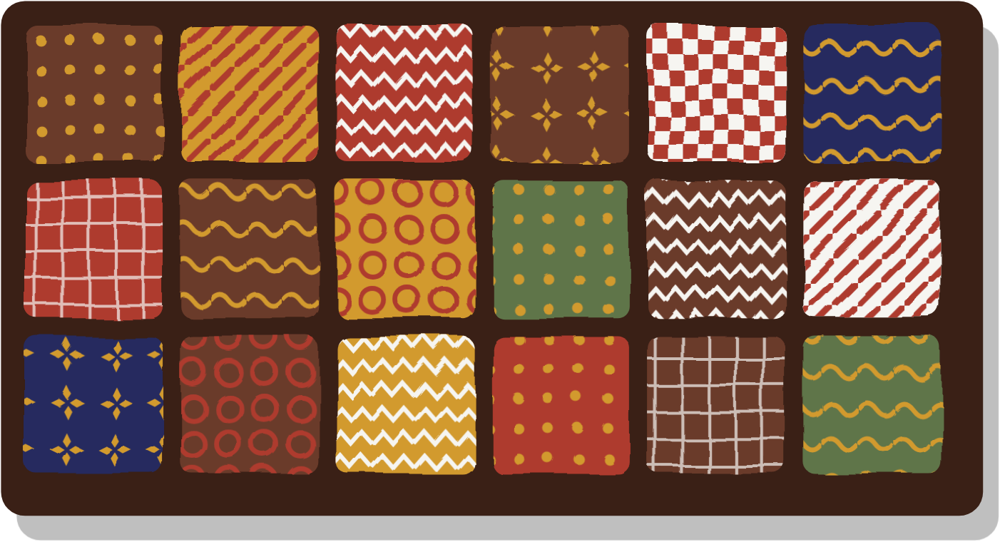
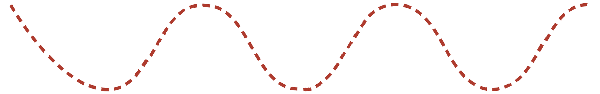
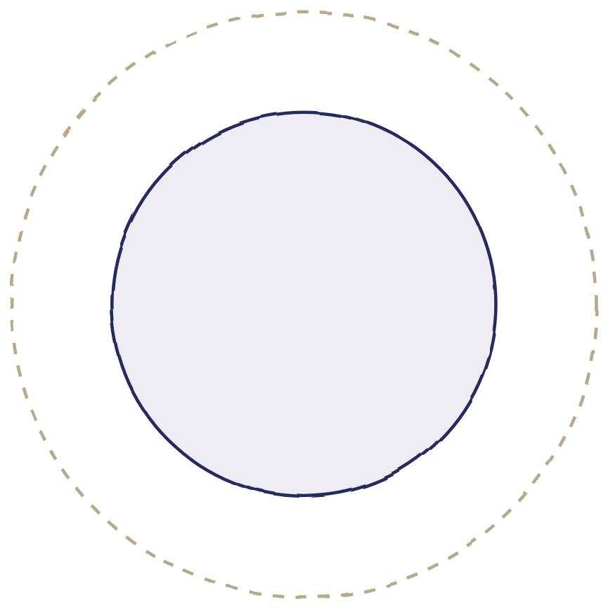
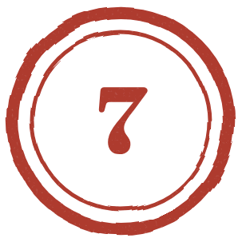
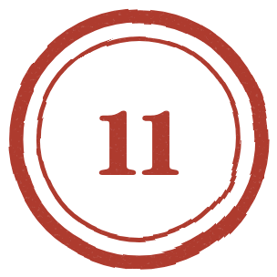
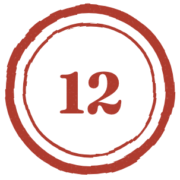

every square aCreate from anywhere, for the people you love.
Taking XYZ's personalized chocolate machine to Cadbury: a marketing strategy that opens online, then puts machines where the demand already is.
XYZ has built a machine that makes chocolate to each buyer's taste on the spot. The aim is to make Cadbury, and eventually every chocolate maker, an advocate for it.
Proposition: become the first chocolate brand in India where consumers create the product at scale, and gain a permanent engine that tells you what people want to taste before you commit a production run.
Nothing in the existing system changes. The Dairy Milk lines keep running at the same speed, volume and cost. The plan adds what they cannot do: one bar for one person, with consumers deciding how big it becomes.
The product: Cadbury Canvas, a premium sub-brand delivered through an app, a small network of Cadbury counters and qualified partners, and eventually a flexible production line.
The opening move is online, not a machine. The plan opens with a campaign, not a capital request: create from anywhere, for the people you love. Anyone can design a bar in the app and send it to the person it was made for, occasion by occasion. Twelve machines before anyone has proved Indians will pay is the most refusable ask; a campaign budget is the smallest, and counters then go where designs already come from.
Presented as a campaign; built as a product. The bursts are seasonal, the app never closes.The plan runs on two tracks, in parallel:
Why it matters to Cadbury: each premium launch adds a SKU that competes with the portfolio; make-to-order does not. Coca-Cola's Freestyle turns pour data into a new drink in as little as 90 days, against 18 months. And Cadbury has already shown the demand: Madbury drew about 5 million flavour entries by its fourth edition, yet made two bars a year. Madbury was a contest; Canvas is a gift, where everyone eats the bar they design.
Why it is not a branding risk: a separate sub-brand, Cadbury-approved recipes only, capped placements, controls that open in stages, and a first phase that risks a campaign budget, not a production decision.
XYZ's machine adjusts sugar, texture, softness, chocolate level and nuts on the fly. XYZ wants to sell it to Cadbury for the Dairy Milk production line. Cadbury is a legacy market leader that prefers proven machinery it can use to automate production immediately.
The instinct is to pitch the machine as a better production line. That framing is set aside as the opening move: on a mass line the machine is judged on throughput and cost per unit against a system Cadbury has optimized for decades, in a price-sensitive market. That is where its differentiation is weakest and where a cautious buyer has every reason to say no.
this is the pitch in one sentenceThe machine's real strength is something the existing line cannot do at all: make one bar for one person, in front of that person. That capability has no competitor inside Cadbury's plant, so it cannot be compared unfavourably to anything.
Twelve machines is roughly ₹2.4 crore of capital, a procurement process and a quality sign-off before anyone has evidence that Indians will pay a premium to create chocolate. An online launch needs an app, a small-batch fulfilment route and a campaign budget, amounts a marketing leader can approve alone. It answers the counters' question (do people design, pay and come back?) before anything is bought, and every design carries a city and an occasion, which tells us where machines should go.
Mass lines are built for long runs of identical product. Every changeover costs time and yield, which makes short runs expensive. That creates real openings for XYZ that have nothing to do with replacing Dairy Milk volume:
These are jobs Cadbury's lines handle worst, worth money whether or not Canvas succeeds with consumers. XYZ pursues them with operations and R&D from the start.
Core message: Cadbury is not asked to change anything that works; the plan adds what the current system cannot do.
These personalization and food-machine launches include ones that worked and ones that did not, each chosen for a specific lesson.
| Case | What happened | Lesson for Canvas |
|---|---|---|
| Cadbury MadburyIndia, 2019 on | Consumers invented Dairy Milk flavours online; winners such as Hint O'Mint and Paanjeer launched as bars. The first edition drew more than 800,000 entries, the fourth about 5 million. | Indians already design Dairy Milk online in millions. Phase 0 keeps that behaviour and changes the ending: everyone eats the bar they design. |
| OREOiDMondelez, 2020 | An online platform to choose Oreo crème colour, dips and sprinkles, and print a photo or text; later offered to foodservice operators. | Mondelez already accepts online personalization in a flagship brand, and it landed in gifting, where Phase 0 opens. |
| Share a CokeCoca-Cola, from 2011 | First names replaced the logo on bottles, and the idea spread worldwide. | A legacy leader personalized the pack and the core brand got stronger. Canvas goes into the contents, hence a separate sub-brand. |
| Nutella UnicaFerrero, 2017 | An algorithm generated seven million different jar designs; they sold out in Italian supermarkets in about a month. | Uniqueness sells even at mass scale. The keepsake is part of the product. |
| Coca-Cola Freestyle | Began with about 72 machines in 43 locations before scaling past 50,000; turns pour data into new drinks in as little as 90 days. | Start small and controlled. The data engine is the long-term value. |
| KitKat Japan | Hundreds of regional and seasonal flavours sold as limited runs and souvenirs. | Limited, local and seasonal editions can be a permanent business, not a stunt. This is the production track's case. |
| Hershey's Chocolate World | The create-your-own experience has run for years; its price rose from $14.95 in 2010 to $29.95 today. | People pay to make their own bar and keep the tin. |
| Case | What happened | Lesson for Canvas |
|---|---|---|
| Keurig Kold2015–16 | A $370 home soda machine that was slow, and whose drinks tasted worse than the canned originals. Discontinued in under a year, with full refunds. | If a Canvas bar is worse than a ₹40 Dairy Milk, nothing else matters, so taste validation at Thane comes before anything is sold. |
| Juicero2016–17 | Launched at $699, cut to $399 after reporters showed its packs could be squeezed by hand. Shut down after raising $120 million. | The machine must visibly do something people cannot do without it, so demo units travel with the Phase 0 campaign rather than waiting for Phase 1. |
| KitKat Chocolatory | Premium boutiques, some with made-to-order bars, drew long waits at busy times; most Japanese stores have since closed. | Premium must not mean friction. |
| Freestyle as a premium idea | It spread everywhere and sits self-serve beside soda fountains, so it reads as fun rather than premium. | Scarcity and staging create premium, not technology. |
| Hershey, as a habit | Even fans describe it as a once-in-a-while trip. | Repeat has to be engineered, which is why the occasion calendar, not the counter, carries it. |
| Lay's "Do Us a Flavor" | Many winning flavours were later discontinued. | One winning recipe is a novelty. The value is the engine that keeps finding the next one. |
What changes for Dairy Milk itself. Dairy Milk's recipe and lines stay as they are, but the brand gains three things. First, a pipeline of proven flavours: when a Canvas recipe wins, it can launch as a Dairy Milk limited edition with demand already shown rather than forecast. Second, festive, regional and seasonal variants become cheaper to run, because short runs move to XYZ modules instead of interrupting a mass line. Third, Dairy Milk's personalized gifting, which today changes the wrapper, can change what is inside it. Canvas is where the experiment happens; Dairy Milk is where the winners scale.
A live read on taste, before the capital. Today Cadbury develops, produces, ships and then finds out. Because the plan opens online, it reads what people choose by city, season and occasion within weeks, months before a machine is installed.
A premium tier that does not add another SKU. Cadbury has pursued premium through launches for over a decade: Bournville, Silk, Dark Milk, Studio Creations in 2024 at around ₹494 for 130g, and two Bournville dark variants in January 2026. Each is a fixed SKU that must be forecast, produced and stocked. A make-to-order format does not commit every combination to permanent stock.
When Cadbury launched Glow in India in 2014, it did so because chocolate gifting was only 5–7% of the Indian market against 15–35% elsewhere. That gap is the commercial centre of this plan, and it answers its hardest question: why pay a premium for chocolate? People pay it for what the chocolate is doing, saying something to a person on a date that matters. A bar designed for one named person is not competing with a ₹40 Dairy Milk; it is competing with the gift that would otherwise have been bought. So the campaign leads with the recipient, and gifting starts in Phase 0. Volume lives here too: one corporate or wedding order carries hundreds of bars, each made to a different person's choice.
A premium sub-brand where consumers create their own Cadbury chocolate. Cadbury Canvas: create from anywhere, for the people you love. (Name subject to trademark clearance.)
The order itself is the fun. You are not picking a product off a screen, you are building one: choose an occasion and a mood, swipe through bases, drop in textures, name the bar, write the message. It has the feel of a game with a real object at the end, and the object is worth photographing.
The opening behaviour is gifting. A daughter in Pune designs a soft milk bar with salted caramel for her mother in Nagpur, and it arrives on the right morning in a keepsake box with her message printed on it. She sends her brother a link to design his own. Nobody needed a machine nearby, so reach is independent of machine count.
Counters add the one thing the app cannot: watching the chocolate pour and set. A traveller at Bengaluru airport with forty minutes to spare makes a bar, names it, and walks away with it in a printed keepsake box labelled for her mother. Her recipe is saved, so the second time takes thirty seconds.
The same counter belongs on the high streets where young premium India spends its evenings, and in the mid-premium places people visit in groups: burger and pizza spots, ice cream parlours, dessert bars and café chains, which give repeat visits rather than once-a-year footfall. On aircraft, cruise ships and in hotel suites, where fresh preparation is impossible, a shelf-stable bar made to order is a premium conventional catering cannot match.
The machine works from five layers: a base (milk, dark, white, high cocoa), a flavour (caramel, hazelnut, vanilla, fruit), a texture (cookie, brownie, crisp, nuts), a finish (sauce, topping, coating) and a format (bar, bite, cup). Roughly twenty approved components sit across those layers.
The consumer never sees a blank slate. The screen opens on a short set of curated recipes that Cadbury's own team has created and tasted, plus the most-ordered bars of the month, so a first-time customer can simply pick a winner. What they cannot do is leave the approved range, because every path through the layers is one Cadbury has already signed off. Allergen rules, portion size and any withheld component are set centrally, per location if needed.
Freedom opens in stages, not on day one. At launch the choice is deliberately narrow (curated recipes, a name and a message) because the first thing to prove is that the bar tastes right and arrives right. Swaps open next, then the wider component set, then seasonal and limited additions (§7). Cadbury holds the dial, and every turn is earned by data from the stage before.
Two modes. Partner mode sets approved ingredients, recipes, portions, pricing and allergen limits; consumer mode shows a simple curated choice. The consumer experiences freedom; Cadbury controls what is possible. An off-brand bar cannot be produced. Never claim a thousand desserts; claim dozens of experiences from a small set of controlled components.
Bars and bites first: shelf stable, giftable, no cold chain, no plating labour, and a physical object to keep or give. That is also what makes Phase 0 possible, because a bar can be posted and a dessert cannot. Cup and dessert formats come later, as depth for existing partners.
| Tier | Price | Job |
|---|---|---|
| Taste bite (~20g) | ₹49 | Trial at close to the price of a regular Dairy Milk; an easy yes |
| Everyday bar (~50g, simple wrap) | ₹149 | Repeat buying at food spots and high streets |
| Signature bar (~50g, keepsake box) | ₹349 | The core product |
| Gift bar, delivered (Phase 0) | ₹399–449 | The launch product: bar, keepsake box, printed message, delivery on the day |
| Limited edition (seasonal, capped) | ₹549–599 | Premium signal, reason to return |
| Gift edition (bar, tin, personalization) | ₹699 | Margin; gifting occasions |
| Wedding and corporate volume | ₹229–279 per bar | Committed quantities |
Where the premium actually sits. The taste bite and everyday bar exist to win trial and repeat, and sit near Dairy Milk (about ₹40) and Silk (about ₹109) on purpose. The premium lives in the signature, gift and limited tiers, where the keepsake box, the message and the occasion are, and those are never discounted. A ₹399 gift bar sits below a ₹729–879 Ferrero Rocher box, which is the comparison that matters, because it is a gift.
Evidence: Hershey charges roughly $30 because the takeaway is a keepsake tin; Freestyle charges no premium and earns on cartridges and data. Price the keepsake, not the chocolate, and remove friction.
The campaign is a standing product with an occasion burst on top. Each occasion brings its own creative, package and a component available only then, so the question becomes what to create this time. The calendar matters to the factory too: every burst is a short run and a capped edition, the work XYZ modules handle best, and a thin calendar would leave the flexible line idle.
Online and offline run one calendar, one offer and one saved recipe: once counters exist, a counter-only component or a collectable occasion package is what brings someone in off the high street.
An experience alone gets tried once. Repetition is designed in: the calendar gives a reason almost every month, recipes are reorderable in one tap, components rotate, limited drops expire, and counters sit in places people already visit. A reminder, a saved recipe and a limited ingredient together turn one gift into a habit.
Both, permanently, and they reinforce each other.
The buyer. XYZ's customer is Cadbury: its marketing leadership as champion, with R&D, operations and the Managing Director as the other decision makers, and quality, finance and sales consulted (§6). Cadbury's customers are then consumers, online first and then at its own counters, and partners who host machines. XYZ sells to Cadbury; Cadbury sells to partners and consumers.
Why consumer demand has to come first. A premium café will not install unproven equipment to save on inventory. It will install it because its customers already want it and a competitor does not have it: differentiation and footfall, not efficiency. The same logic applies one level up. Cadbury will not buy machines to prove a consumer behaviour, but it will buy them to serve one it can already see.
So the consumer layer is not a launch tactic that retires. It does three jobs permanently:
Two pitches. The B2B pitch leads with consumer pull, differentiation, footfall, then margin and payback. The B2C pitch leads with ritual, self-expression and the creation moment. Speed is the B2B promise; slowness is the B2C promise.

In a conventional equipment sale, Evaluation is a technical review and a reference site. Here it is four months of live consumer data Cadbury generated on its own brand, at campaign cost. By the time the machine order is discussed, the market has made the argument.
The Canvas app launches with a campaign built on one line: create from anywhere, for the people you love. Anyone in India can design a bar, name it, write a message and have it delivered, or send a link so the recipient designs their own. Bars are made in capped small batches at Thane, a contract facility or on an XYZ demo unit, and demo units travel to a flagship mall and an airport so people can watch a bar being made.
What Phase 0 costs and what it buys. An app, a fulfilment route and a campaign budget, approvable without a capital decision. It returns the answer to the central bet (do people design, pay, come back and send it on?) plus a city-level map of where demand actually is.
the bursts end; the app does notTwelve Cadbury-owned counters across Mumbai, Delhi NCR and Bengaluru, in airports, metro hubs, premium high streets and malls, including one flagship. Nine months covers a festive season and the quiet period after it. Sites are chosen on Phase 0 order data, so each counter opens with an audience that already has a saved recipe. Funded as experiential marketing, so no capex decision is needed; Cadbury controls every machine, so early problems stay private.
Premium cafés and dessert chains, premium mithai and chocolate stores, hotels and banquets, wedding specialists, premium corporate gifting. Placement is qualified, not open: minimum footfall and average spend, a premium partner brand, visible consumer interaction, repeat frequency, and the capability to host properly. Numbers are capped per city, which protects the premium and keeps the network serviceable.
When a Canvas recipe proves popular enough for national sale, it launches as a limited edition on existing lines. Then XYZ modules go onto a small flexible line inside a Cadbury plant, running the work the calendar generates: seasonal drops, capped editions, regional variants, festive runs and gifting at volume. This reaches the brief's production-line goal as the answer to a problem Cadbury will already have, not a cold sale against working machinery.
While marketing runs Phase 0, XYZ opens a separate conversation with operations and R&D on changeover costs, short-run economics and pilot batches at Thane. Phase 0's batches have to be made somewhere, so the discussion has real orders behind it from the start.
| Setting | Example venues | How it works |
|---|---|---|
| Online, nationwide | The Canvas app and Cadbury's own commerce | Live from month 0; designed anywhere, delivered on the day that matters |
| Airports | Bengaluru T2, Delhi T3, Mumbai T2 | A bar created as a gift, labelled by relationship |
| Premium malls | Phoenix Palladium, DLF Emporio, UB City | Visible counter near the F&B zone; weekend and festive footfall |
| Five-star hotels | Taj, ITC, Oberoi | Signature bar at turndown; guest stations at banquets |
| Destination weddings | Planners in Udaipur, Jaipur, Goa | Each guest creates a favour using the couple's recipe |
| Premium mithai and dessert stores | Modern premium sweet shops in metros | Festive boxes combining Canvas bars with the store's sweets |
| Corporate gifting | Premium gifting operators | Company orders; each recipient designs via link |
| Premium high streets | MG Road and Indiranagar type streets | Evening and weekend crowds; a counter people stop at |
| Mid-premium food spots | Burger and pizza chains, ice cream parlours, dessert bars | A bar made to order after a meal; the highest repeat frequency |
| Aircraft and cruise | Premium cabins, cruise lines | A made-to-order bar where fresh preparation is impossible |
Evidence, Indian demand: Manam Chocolate's 10,000 sq ft Hyderabad factory and café, where visitors watch chocolate being made, has been named among TIME's World's Greatest Places. Subko's Cacao Mill in Mumbai runs make-your-own chocolate sessions. Demand exists; nobody has done it at brand scale.
Marketing leads, because a marketing leader can approve a campaign and an app without a capital decision, and results then persuade everyone else. Phase 0 asks for a campaign budget, not twelve machines, so the first yes is the smallest yes in the sequence. Mondelez's chocolates marketing is led by Ankit Desai, who joined in April 2026 after nearly seven years at Hershey and reportedly leads marketing and P&L for Dairy Milk, Silk and Bournville. Against Mondelez India's FY25 advertising spend of ₹1,520.81 crore, the Phase 0 ask is modest.

| Stakeholder | What they care about | Message | How to reach them | The ask |
|---|---|---|---|---|
| Marketing headchampion | Premium growth, engagement | A premium territory that feeds Dairy Milk without touching it, opening at campaign cost | Executive tasting session | Fund the Phase 0 campaign and app from activation budget |
| R&D / Thane centre | Taste consistency, formulation control | Cadbury defines every recipe; faster pilot batches | Technical review at Thane | Run formulation and food-safety validation; make the first small batches |
| Operations / plant head | Reliability, changeover cost | Short runs without stopping a mass line | Changeover economics | The cost of a short run, and one plant contact |
| Managing Director | Growth, competitive position | A first-mover position competitors cannot quickly copy | Business case via marketing, then Phase 0 results | Name it a strategic priority |
Quality signs off food safety within R&D's validation, finance agrees how Phase 0 will be judged before it starts, and sales joins when Phase 2 needs key accounts. If national leadership is not ready, the same launch runs as a regional festive activation approved by a regional team; a regional head presenting their own successful pilot upward is more persuasive than any vendor pitch, and because Phase 0 is online, that only means geo-targeting a campaign.
Start with what is public: Mondelez's investor materials name premium price points as a trade-up opportunity, and Studio Creations and the new Bournville variants show where the portfolio is heading. Then hold one-to-one conversations built around a few questions. For marketing: which premium launch underperformed, and why. For R&D: how long a new flavour takes from idea to pilot batch. For operations: what a changeover costs, and which runs they least like scheduling. For the Managing Director: which competitive threat worries them most. For everyone: what would make you say no. Then check stated goals against behaviour, where budget has moved and what each person is measured on, and plan around the behaviour.
They will resonate with: brand and emotion, gifting and occasions, limited editions, consumer insight, and premium growth that leaves Dairy Milk untouched.
They will disconnect on: throughput, reliability, food safety, taste consistency, capital cost, and anything that disturbs a system that already works.
What governs their behaviour: Cadbury is custodian of one of India's most trusted brands, and its teams are rewarded for protecting volume, margin and quality. Caution is rational, so the plan never asks them to carry the risk: the first phase is small, online and reversible.
Leadership does not hear the machine described; they use it. The first meeting is a session where each executive creates their own bar, and the argument makes itself in ninety seconds.
Likely excitement: a new premium story, consumer data, social and PR value. Likely scepticism, and the response:

The real risk is simple: the machine fails to deliver what it promises, and a disappointing bar carries the Cadbury name. Every design choice answers that risk.
Control is not a setting switched on at launch. It is a ladder: each rung comes down only after the one before is cleared on evidence.
| Stage | What opens | What stays locked | What must be proved first |
|---|---|---|---|
| Stage 1Phase 0 launch | Curated Cadbury-created recipes, plus the bar name, message and box | Every component choice | That the bar tastes right, survives delivery and arrives on the day |
| Stage 2once quality holds | One swap within a curated recipe: a texture, or sweetness up or down | Combinations outside the tasted set | Consistency across batches, and that consumers use the swap |
| Stage 3at the counters | The full approved set across five layers, and "surprise me" from a tasted set | Any unsigned path; allergen conflicts | Counter quality data, complaint rate, and which components are asked for |
| Stage 4partner network | Seasonal, limited and regional components; partner-specific curated menus | Partner-created recipes | Audited partner performance and a stable complaint rate |
Read down "what stays locked": at no stage can anyone outside Cadbury put a combination into a bar that Cadbury has not tasted and approved. What changes is how much of Cadbury's own range the consumer can reach.
Evidence: Freestyle machines report their own inventory and generate restock orders centrally, which is the model for Canvas telemetry.
| Type | Barrier | Response |
|---|---|---|
| Technical | Taste consistency, cycle time, shelf life, cleaning | Approved recipe graph, sealed cartridges, auto-clean, validation at Thane before anything is sold |
| Operational | Refill, servicing, staffing, small-batch fulfilment | Remote telemetry, capped network, XYZ service contract; Phase 0 batches at Thane or a contract facility |
| Brand | Dilution, a quality failure at a partner site | Sub-brand, scarcity, audits, staged control ladder, owned first phases |
| Financial | Capital cost, uncertain payback | Campaign-funded start with no machine order; revenue offsets cost; no partner capex |
| Organisational | Legacy caution, multiple sign-offs, "not invented here" | Marketing-led entry at campaign cost; evidence before escalation; regional fallback |
| Regulatory | Licensing, allergens, measurement, e-commerce food sale | FSSAI licensing matched to each stage, allergen labelling, Legal Metrology calibration |
| Market | Novelty fatigue, weak repeat | Saved recipes, a full-year occasion calendar, seasonal rotation, limited drops |
FSSAI's 2026 amendments, effective 1 April 2026, set basic registration up to ₹1.5 crore turnover, a state licence to ₹50 crore, and a central licence above that. The requirement lines up with the phases. Phase 0 manufactures at Thane or a licensed contract facility and sells as an e-commerce food business, the lightest position in the plan. Phase 1 takes vending licences per site, in three cities. Phase 2 must allow for five-star hotels needing a central licence regardless of turnover. Throughout, allergen labelling and Legal Metrology calibration apply, both simpler while the recipe set is narrow.
Consumables are locked to XYZ supply on food-safety grounds, so XYZ stays physically present at every machine, and that presence is the business: an annuity, not one transaction. Evidence: Coca-Cola supplies Freestyle equipment cheaply and recovers cost through the beverage relationship, as Nespresso does.
A time-limited exclusivity window in chocolate, in exchange for minimum volume commitments. It covers branded chocolate manufacturers only; cafés and hotels can still buy unbranded machines from XYZ. When it closes, Cadbury keeps its head start: a competitor can buy the same machine, not three years of knowing what India wants to taste.
Once a winning recipe is known, Cadbury can make it on its own lines. That is the plan working, not a leak: tastes shift every season, and what Cadbury needs is the engine that keeps finding the next recipe, which runs on XYZ machines. Switching costs compound: installed machines, telemetry, cartridges, the recipe-graph software and millions of saved recipes. Recipes stay Cadbury's; XYZ owns the machine, software and platform.
These are assumptions, not findings. At ₹349 for a signature bar against roughly ₹50 in ingredients and packaging, a counter does not need high volume to contribute, and a ₹20 lakh machine would pay back within a year at reasonable volumes. Prime space is expensive (Delhi's Khan Market asks ₹1,700–1,800 per sq ft a month), so malls and kiosks carry the first set. No payback is claimed: Phase 1 tests whether 8–14 months is achievable; the real mix will sit below ₹349, and programme cost is additional. It is a marketing investment as much as a unit-economics one: twelve machines is about ₹2.4 crore against an FY25 marketing spend of ₹1,520.81 crore, and unlike a campaign it leaves revenue and a taste dataset behind. Being a product, it also needs running year-round, a real cost to budget from the start.
The brief asks for a strategy that evangelizes Cadbury and every such chocolate manufacturer into promoters of XYZ's product. Once Cadbury is running, that becomes a distribution problem rather than a persuasion problem.
Cadbury as the reference case, not the concept. This is the single most valuable asset the plan produces for XYZ. Once results are public, the pitch to Nestlé, Amul, Ferrero, Lindt and regional players is no longer an idea to be argued but a proven programme with numbers, run by the most trusted chocolate brand in the country. The conversation shifts from "does this work?" to "who is next?"
First-mover advantage. The first brand to offer consumer-created chocolate at scale in India owns the idea in consumers' minds, builds the recipe data and secures the best locations. The exclusivity that protects that position is set out in §8.
Building XYZ's brand. A reference list carrying India's market leader turns XYZ from an equipment vendor into the category's flexible-production layer.
Branded manufacturers are the headline targets, but not the largest count of machines. Adjacent categories want exactly what this machine does, buy faster, and sit outside any exclusivity covering branded chocolate makers:
| Category | Why they want it | How XYZ reaches them |
|---|---|---|
| Customised and premium bakeries | Personalization is already their business; chocolate is a high-margin add-on | Direct sale or lease under the bakery's own branding |
| Sweet shops and mithai chains | Festive gifting is their peak; a made-to-order bar extends a festive box | Regional chains first; festive season as the entry point |
| Ice cream parlours and dessert bars | The highest repeat frequency of any venue; made-to-order is already the format | Machine-as-a-service, unbranded |
| Gifting and corporate gifting firms | Volume personalization is their core, and chocolate the most-requested category | Direct sale on capability and turnaround |
| Hotels, café chains and cruise operators | Differentiation, and a solved stocking problem | Direct sale under their own name |
| Other branded manufacturers | Competitive response once Cadbury's results are public | Cadbury as the reference, after the exclusivity window |
Why these matter. Unbranded placements build service density in the cities where Canvas operates, making Canvas cheaper to service, and none competes with it, because none carries a Cadbury identity.
The early phases are judged in order; a later measure cannot rescue an earlier failure. But the gates are review points, not an off switch. A weak result means one thing is wrong (the offer, the price, the occasion, the fulfilment), and because the plan opens online, fixing it costs a campaign cycle rather than a capital write-off.
Because the product is digital first, the softer half of the return is measurable by default:
A successful Phase 0 earns the machine order. A successful Phase 1 earns the partner rollout. A successful Phase 2 earns the flexible production line. Nothing is asked for before the previous step has paid for the right to ask.

Researched facts are kept separate from judgments. The judgments below would be tested before scaling.
The central bet: that Indian consumers will pay a meaningful premium to create their own chocolate. This is an assumption, not a finding. Madbury proves Indians want to create their own Dairy Milk; it does not prove they will pay a premium to do it, and there is no local precedent at brand scale.
Why we think they may, and what protects the plan if not. The argument (§2) rests on occasion rather than chocolate, and it is still an argument. Testing it is cheap and reversible: Phase 0 answers it at gate 2 in month two, before any machine is ordered. If it fails, Cadbury has learned that for the cost of one occasion campaign.
Other assumptions:
Where published data varies: India chocolate market estimates differ by source, and Mondelez's share of Indian chocolate is reported between roughly 55% and 65%. Market-size and retail-rent figures are third-party estimates; unit economics here are an illustrative scenario, not findings.
Needed from XYZ engineering: actual machine cost, cycle time, footprint, power and cleaning requirements, cartridge shelf life, and the true range of adjustable parameters. These determine whether the architecture and economics here hold.
Coca-Cola company materials on Freestyle scale, data and product development; Coca-Cola and trade coverage of Freestyle deployment and Freestyle Mini; Nestlé materials and press coverage of KitKat Chocolatory, including store closures; Hershey's Chocolate World listings and visitor reviews; Ritter Sport Bunte Schokowelt materials and reviews; Harvard Digital Initiative and trade coverage of Lay's "Do Us a Flavor"; Ogilvy and trade coverage of Share a Coke, including its Indian adaptation; Adweek and trade coverage of Nutella Unica; Idomoo and trade coverage of Cadbury Glow and Flavorism; TechSci Research on India's premium chocolate market; Mondelez investor materials and Indian financial disclosures; press coverage of Ankit Desai's appointment; Mondelez materials on the Thane Technical Centre; FSSAI Licensing and Registration Amendment Regulations 2026; Indian retail and commercial property reporting on rents and mall leasing; Indian press coverage of Manam Chocolate and Subko's Cacao Mill; Cushman & Wakefield high-street rent reports for Delhi-NCR; Indian marketing press coverage of Cadbury's Madbury campaigns; Mondelez and trade coverage of OREOiD; trade and press coverage of Keurig Kold and Juicero; Indian online retail listings for Dairy Milk and Silk prices.

| The brief asks | Section |
|---|---|
| Marketing strategy to evangelize Cadbury and every such manufacturer | Executive summary; §5; §9 |
| Transformations this brings to Dairy Milk | §2 |
| How customer and consumer behaviour changes; what the buying experience looks like | §2; §3 |
| How to showcase and convince a legacy market leader | §1; §5; §6 |
| Concept, narrative and approach to market | §1; §3 |
| The buyer's journey, and who the buyer is | §4 |
| Why this won't be a branding fiasco | §7 |
| B2B or B2C, and how to approach both | §4 |
| Case studies and their relevance | §1: Madbury, OREOiD, Share a Coke, Nutella Unica, Freestyle, KitKat Japan and Hershey (worked); Keurig Kold, Juicero, KitKat Chocolatory, Freestyle as premium, Hershey as a habit and Lay's (did not). Further evidence in §3, §5, §7 and §8 |
| Step-by-step strategy for a legacy leader | §5 |
| Resonance points, disconnects, what governs behaviour | §6 |
| Product experience marketing: excitement and scepticism | §6 |
| Who inside the organisation to target, and how the message reaches them | §6 |
| Their goals, how to discover them, how to know the strategy works | §6; §10 |
| Barriers, bucketed and classified | §7 |
| Online ordering, gifting and occasion offers | Executive summary; §3; §5; §8; §10 |
Prepared in response to CynLr's problem statement. "Cadbury Canvas" is a working name subject to trademark clearance; Cadbury, Dairy Milk, Silk and Bournville are trademarks of Mondelēz International.